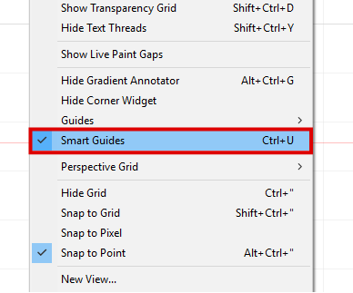

Adobe Illustrator
In this tutorial we will discuss the basics of vector drawing with Adobe Illustrator: you will be guided step by step to customize the components of your quadruped robot that you will then cut by laser.
Adobe Illustrator is a vector drawing software that offers many illustrative functions. Unlike matrix images that consist of pixels aligned on a frame, the vector images generated by Illustrator consist of curves generated by mathematical formulas: they do not lose quality when enlarged. Illustrator is therefore also well suited to the creation of images for the paper or internet edition, as for the machining with numerical control: in our case the laser cutting.
Start Illustrator and open the file "robots-laser.ai" which contains the robot elements that will be
laser cut:
Open -> fichier quadrupèdes
Be sure to record your work regularly as you progress through the tutorial:
File > Save or [Ctrl]+[S]
First you will reset the workspace so that it corresponds to the one we are going to present to you,
go to the menu (top bar) then click:
Window > workspace > reset the essentials
The Illustrator interface consists primarily of:
- (1) a menu bar at the top
- (2) a control panel at the top, under the menu bar
- (3) a toolbar on the left
- (4) of one or more work plans at the center
- (5) of several tool panels on the right
The various open documents are presented in the form of tabs.
Illustrator supports a wide variety of file formats. In the same document, it is therefore possible to insert both images, text or plots.
Tip: If you want to know what an interface icon is, place your pointer on it and then wait, you will see a tooltip.
RGB and CMYK colorimetric models
For laser cutting we use color codes corresponding to different types of tasks sent to the machine: for example, the fine contours in pure red correspond to cut-outs, flat black and gray levels to engravings etc. There are two ways to create colors: RGB mode and CMYK mode.
RGB mode This mode is called "additive" because it allows the creation of colors by mixing red, green and blue. This mixture gives cyan, magenta, yellow and white. This technique is used when the color emanates from the light source, for example in screens and lighting.
CMYK mode : this mode is called "subtractive", in which case the color does not emanate from the light source, it is the white ambient light that reaches a colored medium. Part of the spectrum is absorbed by the support and the other is reflected towards the eye of the observer. The colors are obtained by associating pure cyan (C), magenta (M) and yellow (Y), the black (K) is added in order to deepen the blacks. This technique is called quadrichromy, it is widely used in printing.
In our case we will use the RGB mode:
File > document color mode > RGB mode
Moving around in the document
We will now be interested in the tools that allow us to move in the work plan:
- Spacebar and left-click: multidirectional movement
- Wheel: vertical movement
- Wheel and [ctrl]: horizontal movement
- Wheel and [alt], or [ctrl]+[+] , [ctrl]+[-] = zoom
If you want to display all the plots of your document you can go into View (menu bar) then click on Adjust everything to the window.
Selection
To select paths, there are two different tools, both accessible from the toolbar:
- 1 - The selection tool (black arrow): allows to select the whole of a path
- 2 - The direct selection tool (white arrow): allows to select the components of a path, segments, nodes etc..
The file that you have opened contains a set of linked images in a single group, and you will first dissociate them: use the selection tool (black arrow) to select the whole group, then in the Menu go to object and choose dissociate. Now each path of the file can be selected and then transformed or moved independently.
You will now group all the paths belonging to the different components of the robot, first select all the paths that make up the robot's leg: hold down the [shift] key (or [Maj]) and then with the black arrow select one by one the plots, You can also draw a selection window (click and drag) all the objects on which the window will pass will be selected.
The active objects are now enclosed in a selection frame: this allows you to transform the selected objects, by flying over the frame handles (small squares on the edges of the frame) your cursor will change appearance: it will allow you to resize, rotate, and move objects. Holding the [shift] (or [Maj] key) will keep the proportions of your selection during transformations.
Associate all the paths of the leg: Object> associate
Do the same for all components of the robot:

- 1 - The 4 legs (associated one by one)
- 2 - The top plate
- 3 - The 4 arms (associated one by one)
- 4 - The bottom plate
The association of paths between them allows us, among other things, to quickly modify the interdependent objects and to keep the alignments during the displacements.
By double-clicking on the group of paths you will be able to develop its hierarchy and thus be able to modify individually each component of the group.
To exit this mode and return to the level of your document just double-click anywhere in your document outside your selection, you can also click the gray arrow left.
A gray bar appears when editing a group: in this case our leg is called "group" and is on the "Layer 1"
You can find the tree structure of your document in the "layers" panel on the right in the tool panels, the main functions of this panel are:
- 1- Develop a hierarchy of a layer (small white arrow) to see objects in it
- 2- Show or hide layers (eye icon)
- 3- Select the set of objects from the same layer
- 4- Create new layers and sublayers
Working with layers makes it easy to organize objects within a document: mainly when we want to group identical objects, change their selection color and arrange them between them. If, for example, we want an object to be placed in front of another, simply select the corresponding layer in the layer pane and then drag it up in the Illustrator tree. Editing a file: in order to guide you in the choice of selections you will activate the commented marks, this option helps in determining the objects selectable during the mouse over and provides indications that help to draw. To do this go back to view (menu bar) and then activate comment marks.
We will then activate the rules as well as the grid: View > Show grid then View > Rules > Show Rules
Then we will modify the work plan: the workplane is our drawing area, it is possible to create several of them within the same document. Workbenches can be accessed from the toolbar.
Select the work plan tool in the toolbar: you will see a selection box around your artwork that will allow you to modify it and move it.
In the control bar (at the top of your document) set the reference point (1) at the top left, set the work plan (2) position to 0 in X and Y and check that its size (3) Make 175mm in X and 175mm in Y.
You will now customize the legs of your robot, we will begin by converting the old legs into markers: in illustrator any path can be converted into a guide, the guides thus created are aids to the design that exist only 'Within Illustrator, they will not appear when exporting the file.
With the selection tool (black arrow) select the 4 legs then click View > Guides > Create Guides. The paths you have selected are now marked in light blue.
Drawing Tools
In Illustrator there are many drawing tools, as part of this tutorial we will mainly focus on three different ways of creating paths: from simple shapes, with the tool "curve", with the tool "feather". We will then see how to combine, deform and change the appearance of the paths we have created.
Simple shapes
Let's start by drawing the screw holes of the servomotor. In the toolbar click and hold the left mouse button on the rectangle tool, a submenu will appear showing other basic shapes: select the ellipse tool.
To draw the ellipse from its center press the [Alt] key on your keyboard, place the pointer in the center of the hole guide we created in the previous step. The "center" comment should appear indicating that you are hovering over the center of the guide. Click once with the left click, a dialog will open in which you enter the dimensions of the circle: 2.1mm X 2.1mm.

Repeat for the second screw hole in the leg, then select the rectangle tool to draw the motor housing: this time you will click with the left click on the upper left corner of the rectangular guide then hold the button And drag to the lower right corner of the rectangle. Release when the "anchor point" comment appears.
Changing the appearance of paths
The vector paths have two appearance components: a contour and a fill, both of which can be modified independently of each other. It is also possible to create paths with only a contour or only a fill. In our case we do not need filling because for the cutting the laser will follow the contours of our paths.
With the selection tool (black arrow) select the paths you just created, the appearance of the selected objects appears at the top left of the control bar.
Hold down the [Shift] key and click Fill. Select the icon with a red diagonal to indicate that there is no fill. Always use the [Shift] key, click on outline, to set the maximum value for red (R = 255) and minimum for green and blue (G = 0 and B = 0), and then enter 0,01mm in the contour thickness.
These values define the paths as cut-outs for the laser machine. In the machine control software (Trotec Job Control), it is thus possible to parameterize up to 16 different colors which correspond to as many different machining strategies.
Curvature tool

The curvature tool is a way to simply draw curves and straight lines. We will use it to draw the leg of the robot on the basis of the guides we have created from the original document.
Hold down the [alt] key on your keyboard, then place a first point by clicking along the guide, and then place a second point along the guide as long as you do not release the [alt] key. Release the [alt] key and continue to place points: you now draw curves, a preview of the curve is displayed depending on the position of your cursor.
Try to reproduce the original leg as faithfully as possible by following the guides. If you want to cancel the last point, press [Ctrl]+[Z], to continue your drawing without taking into account the previous curvature press the [alt] key and click on the last point you just created. During the drawing you can reposition the points you just placed without changing the tool by simply clicking on them and then sliding them to their new position.
To finish, close the path by clicking on the first point created: a small circle appears next to your cursor indicating that you can close your path. If you want to cancel the operation to restart press [Esc], or click the Selection tool in the toolbar (black arrow).
Editing paths
The drawing you have created is probably quite approximate to the original model: we will now see how to correct the paths. In the toolbar, choose the direct selection tool (white arrow) and click on the point you want to modify: you can move it or change its curvature using the two tangent handles.
It is also possible to add or remove points on an existing path: use the pen tool located to the left of the curvature tool in the toolbar. When browsing a path, a "+" appears next to the cursor indicating the possibility of adding points and when an anchor point is over a "-" indicates that you can delete a node.
Use the pen tool in combination with the direct selection tool to adjust your path to the original model.
The pen tool also allows to create traces called "Béziers curves", we will see its use in the next step.
Pen tool
This tool looks much like the curve tool we have just seen but allows a more precise drawing, the curvature of each point is defined during the drawing: for each point placed you have to click to create a point and then to drag to define the point Tangent of the curves. To draw straight segments just click without moving the mouse.
In the same way as above, if you want to continue your path without taking into account the previous curvature, click on the last point placed by holding down the [alt] key.
Try to draw your own version of the leg using the pen tool: make sure to keep the overall dimensions and the position of the servomotor. Use the direct selection tool to correct your path.
Here are some examples of customized legs:
Keep in mind that nothing should obstruct the movement of the robot and that the too thin elements may break.
Duplicate your piece in 4 copies by copying and pasting ( [ctrl]+[C] and [ctrl]+[V] ) or with the black arrow by sliding while holding down the [Alt] key.
Preparation of paths for laser cutting
Start by optimizing your document by rearranging the paths between them in order to save the raw material as much as possible.
Then select all the paths ( [Ctrl]+[A] or draw a selection box with the selection tool) and make sure that the contour thickness is 0.01 mm, that your document is in RGB mode and That the contours are in R=255, G=0 and B=0.
Finally save your document in PDF format by adding your first and last names following the original name.
File > Save as, type > pdf
To continue
The tutorial is now complete: we have presented you the basics of the software, it goes without saying that Illustrator is a very powerful software that offers many other features. If you want to improve your knowledge, we recommend that you follow the tutorials offered by Adobe available on this page: Adobe Illustrator Help